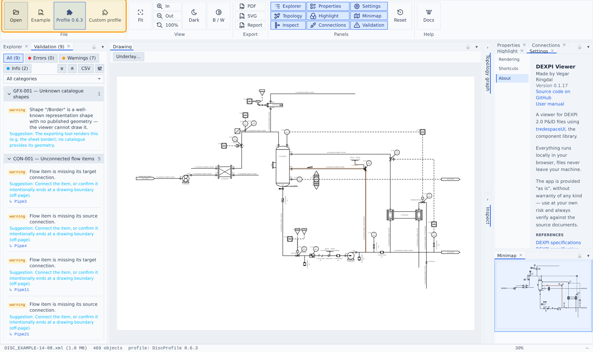
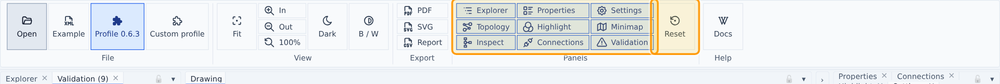
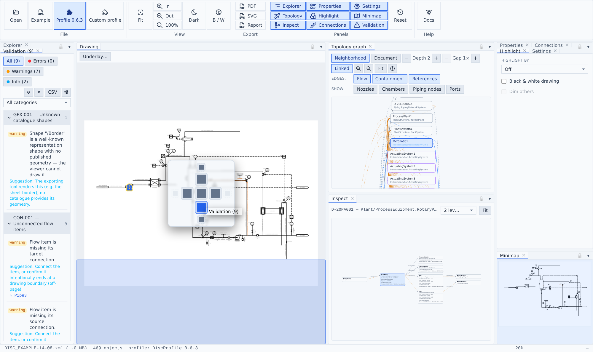

Getting started

Opening files
- Open (ribbon → File) or drag-and-drop a DEXPI 2.0 XML file anywhere onto the app.
- Example loads a bundled official DISC example sheet.
- Profile 0.6.3 loads the bundled official DISC profile so
Profile/SymbolUsagereferences resolve; Custom profile loads your ownDiscProfile.xml. The loaded profile survives document changes and is shown in the status bar.
Only the DEXPI 2.0 XML serialization is supported (Proteus 4.x files from the DEXPI 1.x era are out of scope).
The workbench

Dockable panels around a central drawing: Explorer and Validation on the left, Properties / Connections / Highlight / Settings on the right with the Minimap below, and Topology graph + Inspect as collapsed rails next to the drawing (click their chevron to expand). Two more object browsers — Conceptual Model Tree & Diagram Tree, raw-XML views alongside the Explorer — are off by default; toggle them on from ribbon → Panels.
The panel shell is the tredespace UI workbench, so every panel is fully rearrangeable:

- Drag a panel by its tab to dock it anywhere — side by side, stacked, or dropped onto another panel to form a tab group.
- Float a panel out of the dock into its own dialog window by dragging it free; re-dock it the same way.
- Collapse a panel group to a slim rail with the chevron in its header (Topology graph and Inspect start collapsed) and click the rail to expand it; the
▾in a group header shrinks or restores the group in place. - Resize any column or row by dragging the splitters between panels; close a panel with its tab's
×. - Toggle any panel on or off from ribbon → Panels.
The layout persists across sessions; if you get lost, ribbon → Reset restores the default layout.
Shortcuts
Every ribbon action has a keyboard shortcut, rebindable in Settings → Shortcuts (click Record, press the new keys). Plain keys drive the app so nothing collides with the browser: F fit, 0 zoom 100%, Z then I/O zoom in/out, D theme, B black & white, digits 1–9 toggle the original panels, T then C/D toggles Conceptual Model Tree / Diagram Tree, E then P/S/C export PDF/SVG/report, Ctrl+O open a file, F1 this manual. Export keymap saves your overrides as a portable JSON file; Import keymap applies one — unknown ids and conflicting keys are skipped, with a report of what happened.
Status bar
File name and size, object count, loaded profile, zoom, and the cursor position in drawing millimetres.